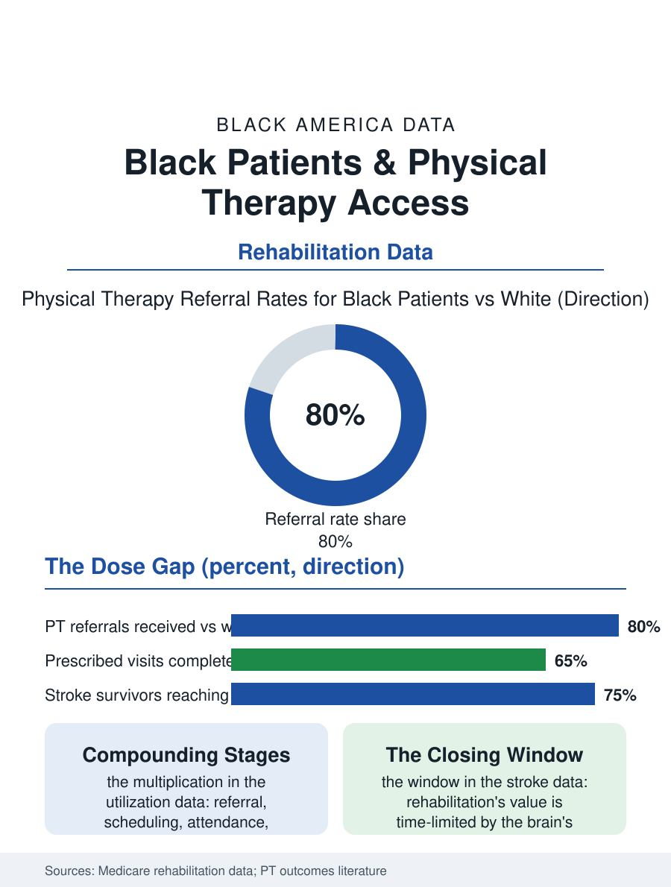

Black Public Health
The Dose Decides: Black Patients and Physical Therapy
Rehabilitation works by dose, and Black patients are referred less, scheduled worse, and complete fewer visits, with stroke recovery paying the highest price. The PT file.

Physical therapy is the health system's repair shop, the discipline that restores function after the stroke, the joint replacement, the injury, and the fall, and its utilization data show Black patients referred less, arriving later, and completing fewer visits than the prescriptions intend, with the outcomes, the recovered range and strength, trailing accordingly. This article reads the rehabilitation access file.
The Referral and the Dose
Rehabilitation's evidence base runs on dose: the therapy works in proportion to the visits completed and the home program's execution, which makes its disparities a multiplication problem, each stage's small gap, referral, scheduling, attendance, completion, compounding into a large total difference in delivered therapy. The referral studies find the first gap at the physician's pen: Black patients with the same diagnoses and functional scores receive physical therapy referrals at lower rates in the primary and orthopedic care data, the discretionary referral being, as everywhere in this section, the variable that absorbs the system's biases. The scheduling gap follows the access map, therapy clinics concentrated in the affluent suburbs and the hospital campuses, their hours the business day's, their Medicaid acceptance the usual fraction, so that the hourly worker with the knee replacement faces the triple arithmetic of distance, shift, and coverage that the schedule file prices. Attendance and completion then record the predictable result: Black patients complete fewer of the prescribed visits in the outpatient data, the no-show and dropout patterns tracking the transportation and work variables the clinics' own surveys name, while the home program's execution, the exercises between visits that carry much of the effect, depends on the household's space, time, and health literacy in the pattern of every adherence file.
Where the Dose Matters Most
The stakes concentrate in the high-value indications. After stroke, the rehabilitation window is time-limited by the brain's own plasticity calendar, and the stroke file's survivors reach inpatient rehabilitation facilities at lower rates than white survivors with the same deficits in the Medicare data, discharged instead to skilled nursing or home with less intensive therapy, a placement decision made in the hospital's discharge process whose racial pattern the placement literature documents and the outcomes follow, Black stroke survivors' functional recovery at a year trailing on the dose they received. Joint replacement tells the elective version: the knee and hip replacements of the arthritis file succeed or fail on the rehabilitation that follows, and the therapy dose gap converts directly into the outcome gap the registries record. The sports and occupational injury files complete the picture, the workers' compensation therapy authorizations and the school athletics' training rooms distributing rehabilitation's benefits through the insurance statuses the employment files supply. Against the pattern stand the integrated exceptions: the VA rehabilitation system, the prepaid plans' embedded therapy, and the community clinic models that co-locate therapy with primary care in the burdened neighborhoods, each posting narrower gaps in their internal data by owning the referral and the schedule rather than renting them from the market's map.
Function as the Outcome
The rehabilitation file closes on its discipline's particular moral clarity: the outcome is function, the patient's own stairs, grip, gait, and reach, measured in units no one can call abstract, and the gap in the delivered dose is therefore a gap in futures the patients can enumerate, the return to the job, the independent toilet, the grandchild lifted. The interventions the evidence supports are the system's usual honesty exercises: referral protocols that remove the pen's discretion for the standard indications, therapy capacity sited by the burden map and scheduled past the working day, transportation treated as part of the prescription, and completion measured and reported by race wherever the dose is prescribed, so that the gap lives in the quality data rather than the anecdote file. The profession's own pipeline belongs in the file too: physical therapists are among the least diverse of the health professions in the workforce data, its doctoral programs' Black enrollment in the low single digits, and the concordance literature's findings on adherence apply here with special force in a discipline built on touch, trust, and the home program's intimate economics. The bureau of this file is the goniometer, the angle-measuring ruler of the therapy gym, and its readings, summed across the stroke wards and the surgical recoveries, compose the record of who got their function back. The data say the dose decides it, and the dose, in Black America, is still prescribed by the map.
More in Black Public Health
Hypertension Among Black Adults: Prevalence, Control, and Consequences
About 55 percent of Black adults have hypertension — the highest rate of any U.S. group. Prevalence, onset, control, and the stroke, heart, and kidney consequences in the data.
Diabetes Among Black Adults: Prevalence and Complications
Nearly one in five Black adults has diabetes, diagnosed or undiagnosed — and its complications fall with particular weight. The CDC data on prevalence, control, and outcomes.
Black Life Expectancy: The Gap at Birth and Its Causes
Black life expectancy at birth is about 73 years, roughly five years below the national figure — the summary measure of every health gap in this section. The CDC data.
Source: Medicare rehabilitation utilization data; Agency for Healthcare Research and Quality; physical therapy outcomes and disparities literature.